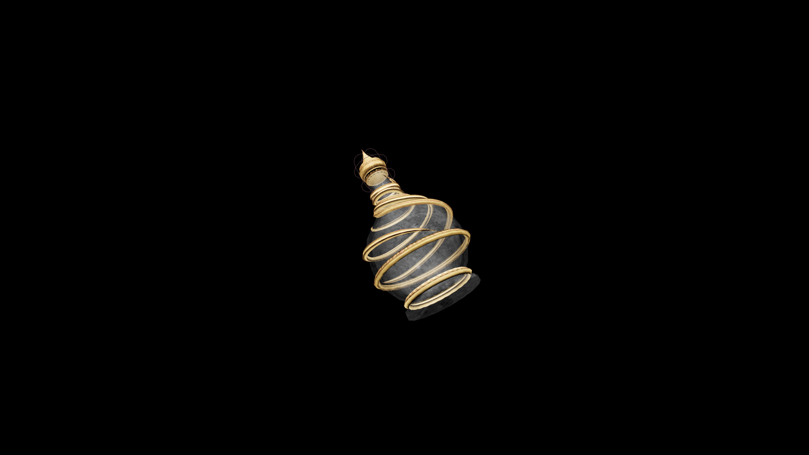

Master Potion Of Fortify Illusion
This advanced potion sharpens perception and deepens control over the senses. It strengthens the drinker’s command of light, sound, and thought, allowing illusions to deceive, influence, and inspire with flawless precision.

Item stats
Item stats
| Weight | 1.0 |
|---|---|
| Value | 125. 0 |
Magic Effects
Magic Effects